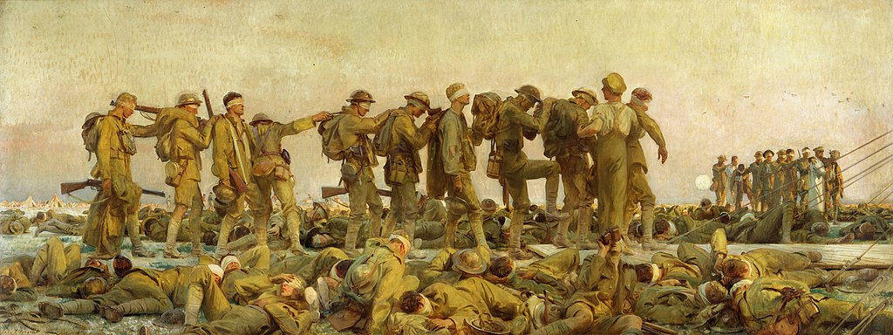

<head>
<meta charset="UTF-8" />
<meta name="keywords" content="drawing, painting" />
<meta name="description" content="drawings by Sunjy" />
<title>Sunjy</title>
<link rel="shortcut icon" type="image/x-icon" href="../../mImages/mCommon/favicon.ico" media="screen" />
<link rel="stylesheet" type="text/css" href="../../mCsses/mCommon/mCssA.css" />
<link rel="stylesheet" type="text/css" href="../../mCsses/mCommon/mCssB.css" />
<link rel="stylesheet" type="text/css" href="../../mCsses/mCommon/mCssC.css" />
<link rel="stylesheet" type="text/css" href="../../mCsses/mCommon/mCssD.css" />
<link rel="stylesheet" type="text/css" href="../../mCsses/mContent/mCssA.css" />
<link rel="stylesheet" type="text/css" href="../../mCsses/mContent/mCssB.css" />
<link rel="stylesheet" type="text/css" href="../../mCsses/mContent/mCssC.css" />
<link rel="stylesheet" type="text/css" href="../../mCsses/mContent/mCssD.css" />
</head>
<script type="text/javascript" src="../../mScripts/mContent/mContentAA.js" /></script>
<script type="text/javascript" src="../../mScripts/mContent/mContentAB.js" /></script>
<script type="text/javascript" src="../../mScripts/mContent/mContentAC.js" /></script>
<script type="text/javascript" src="../../mScripts/mContent/mContentAD.js" /></script>
<script type="text/javascript"></script> 
<script type="text/javascript">
document.write('<div class="mImgAbsolute"></div>');
/*
document.write('<p class="mFontSizeBColor" />From a white paper...</p>');
document.write('<table class="center"><tr><td>');
document.write('');
document.write('</td></tr></table>');
*/
</script>


<script type="text/javascript">
document.write('<p class="mFontSizeBColor" />Gassed</p>');
document.write('<p class="mFontSizeSColor" />“Gassed” by John Singer Sargent depicts the aftermath of a mustard gas attack during the First World War. The oil painting completed one year after the end of WWI shows a line of wounded soldiers walking towards a dressing station.<br><br>The composition is focused on a central group of eleven soldiers depicted nearly life-size. The wounded soldiers walk in a line, in three groups of three, along a duckboard towards a dressing station, suggested by the guy ropes to the right side of the picture.<br><br>The gas has temporarily blinded their eyes, so medical orderlies had to assist them.<br><br>Many dead and wounded soldiers lie around the central group.  Another train of injured, with orderlies, advances in the background on the right.<br><br>Biplanes dogfight in the evening sky above, as the setting sun creates a yellow haze that burnishes the subjects with a golden light.<br><br>In the background, the moon is rising, and several men play football in blue and red shirts, as a distraction from the carnage all around them.<br><br>Sargent was commissioned by the British War Memorials Committee to document the war.<br><br>Although Sargent was 62, he traveled to the Western Front in mid-1918, spending time with the English Guards Division near Arras, and then with the American Expeditionary Forces near Ypres.<br><br>As an American painter, Sargent was asked to create a work embodying Anglo-American co-operation.<br><br>He was determined to paint an epic work but struggled to find a mass of American and British figures in the same scene. Sargent wrote:<br><br>“How can one do an epic without masses of men? … one a harrowing sight, a field full of gassed and blindfolded men.”<br><br>One of the commanders during the incident that Sargent witnesses described the events as:<br><br>“Without warning, a considerable number of officers and men were ‘gassed’ and temporarily placed hors de combat. As the unfortunate victims were being helped, practically blinded, by their comrades on a field ambulance, John Sergeant happened to arrive on the scene. Shortly before, he had told me that he had been commissioned to paint a picture which should be typical of the war, and I suggested ‘tanks,’ they being the latest military machine and a novel feature of it.” However, … on seeing the gassed soldiers being led to the ambulance, “he decided that he has before him what he was seeking”.<br><br>Mustard Gas<br><br>Mustard Gas is a chemical warfare agent, which can form large blisters on exposed skin and in the lungs. The common name of “mustard gas” is inaccurate because the sulfur mustard is not vaporized, but dispersed as a fine mist of liquid droplets.<br><br>Mustard gas was first developed in large-scale production for the Imperial German Army in 1916.<br><br>The mustard agent was first used in World War I by the German army against British and Canadian soldiers near Ypres, Belgium, in 1915 and later also against the French Second Army.<br><br>The Allies did not use mustard agent until late 1917 after the armies had captured a stockpile of German mustard shells. It took the British more than a year to develop their mustard agent weapon, which was used first in late 1918 during the breaking of the Hindenburg Line.<br><br>Mustard agent is dispersed by munitions such as aerial bombs, land mines, mortar rounds, artillery shells, and rockets. Exposure to the mustard agent was lethal in about 1% of cases.<br><br>Its effectiveness was as an incapacitating agent. The first countermeasures against mustard agent were relatively ineffective since a soldier wearing a gas mask was not protected against absorbing it through his skin and being blistered.<br><br>Mustard agent is a persistent weapon that remains on the ground for weeks, and it continues to cause ill effects. If the mustard agent contaminates a soldier’s clothing and equipment, then the other soldiers that he comes into contact with are also poisoned.<br><br>Towards the end of World War I, the mustard agent was used in high concentrations as an area-denial weapon that forced troops to abandon heavily contaminated areas.<br><br>Since World War I, a mustard agent has been used in several wars or conflicts, usually against people who cannot retaliate in kind.<br></p>');
document.write('<table class="center" /><tr><td>');
document.write('<br>The composition is focused on a central group of eleven soldiers depicted nearly life-size. The wounded soldiers walk in a line, in three groups of three, along a duckboard towards a dressing station, suggested by the guy ropes to the right side of the picture.<br><br>The gas has temporarily blinded their eyes, so medical orderlies had to assist them.<br><br>Many dead and wounded soldiers lie around the central group.  Another train of injured, with orderlies, advances in the background on the right.<br><br>Biplanes dogfight in the evening sky above, as the setting sun creates a yellow haze that burnishes the subjects with a golden light.<br><br>In the background, the moon is rising, and several men play football in blue and red shirts, as a distraction from the carnage all around them.<br><br>Sargent was commissioned by the British War Memorials Committee to document the war.<br><br>Although Sargent was 62, he traveled to the Western Front in mid-1918, spending time with the English Guards Division near Arras, and then with the American Expeditionary Forces near Ypres.<br><br>As an American painter, Sargent was asked to create a work embodying Anglo-American co-operation.<br><br>He was determined to paint an epic work but struggled to find a mass of American and British figures in the same scene. Sargent wrote:<br><br>“How can one do an epic without masses of men? … one a harrowing sight, a field full of gassed and blindfolded men.”<br><br>One of the commanders during the incident that Sargent witnesses described the events as:<br><br>“Without warning, a considerable number of officers and men were ‘gassed’ and temporarily placed hors de combat. As the unfortunate victims were being helped, practically blinded, by their comrades on a field ambulance, John Sergeant happened to arrive on the scene. Shortly before, he had told me that he had been commissioned to paint a picture which should be typical of the war, and I suggested ‘tanks,’ they being the latest military machine and a novel feature of it.” However, … on seeing the gassed soldiers being led to the ambulance, “he decided that he has before him what he was seeking”.<br><br>Mustard Gas<br><br>Mustard Gas is a chemical warfare agent, which can form large blisters on exposed skin and in the lungs. The common name of “mustard gas” is inaccurate because the sulfur mustard is not vaporized, but dispersed as a fine mist of liquid droplets.<br><br>Mustard gas was first developed in large-scale production for the Imperial German Army in 1916.<br><br>The mustard agent was first used in World War I by the German army against British and Canadian soldiers near Ypres, Belgium, in 1915 and later also against the French Second Army.<br><br>The Allies did not use mustard agent until late 1917 after the armies had captured a stockpile of German mustard shells. It took the British more than a year to develop their mustard agent weapon, which was used first in late 1918 during the breaking of the Hindenburg Line.<br><br>Mustard agent is dispersed by munitions such as aerial bombs, land mines, mortar rounds, artillery shells, and rockets. Exposure to the mustard agent was lethal in about 1% of cases.<br><br>Its effectiveness was as an incapacitating agent. The first countermeasures against mustard agent were relatively ineffective since a soldier wearing a gas mask was not protected against absorbing it through his skin and being blistered.<br><br>Mustard agent is a persistent weapon that remains on the ground for weeks, and it continues to cause ill effects. If the mustard agent contaminates a soldier’s clothing and equipment, then the other soldiers that he comes into contact with are also poisoned.<br><br>Towards the end of World War I, the mustard agent was used in high concentrations as an area-denial weapon that forced troops to abandon heavily contaminated areas.<br><br>Since World War I, a mustard agent has been used in several wars or conflicts, usually against people who cannot retaliate in kind.<br>" />');
document.write('</td></tr></table>');
</script>


